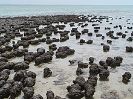

Os fósseis são restos de seres vivos ou de evidências de suas atividades biológicas preservados em diversos materiais.[1] Essa preservação ocorre principalmente em rochas, mas pode ocorrer também em materiais como sedimento, gelo, piche, resina, solo e caverna , e os exemplos mais citados são ossos e caules fossilizados, conchas, ovos e pegadas.[2] A Paleontologia é a principal disciplina científica que utiliza fósseis como objeto de estudo,[2] instaurada com a aceitação dos trabalhos de Georges Cuvier.[3] Nessa área do conhecimento, os fósseis fornecem dados importantes quanto à evolução biológica, datação e reconstituição da história geológica da Terra.[2]
A totalidade dos fósseis e sua colocação nas formações rochosas e camadas sedimentares é conhecido como registro fóssil, o qual contém inúmeros restos e vestígios fossilizados dos mais variados seres do passado geológico da Terra. Porém, apenas uma porcentagem ínfima das espécies que já habitaram a Terra preservou-se na forma de fósseis, já que a fossilização é considerada um fenômeno excepcional por contrapor-se aos processos naturais de decomposição e intemperismo.[2] Logo, as partes esqueléticas biomineralizadas, mais duras e resistentes à decomposição e à erosão, tais como dentes, conchas, carapaças e ossos, são bem mais frequentes e, por isso, a maioria do registro fóssil é constituída por fósseis destes tipos de restos biológicos.[2] Entretanto, restos orgânicos mais delicados e perecíveis também podem se fossilizar.[2] A preservação de matéria orgânica e de restos esqueléticos delicados, uma vez que estes se decompõem e são destruídos rapidamente, requerem condições de fossilização fora do comum e, por serem especiais, ocorrem na natureza mais raramente.[2] Isso implica na menor ocorrência natural desses fósseis de restos.[2] Em qualquer das circunstâncias, para que os restos de um qualquer ser vivo fossilizem-se, é fundamental que esses sejam rapidamente cobertos por material que os preserve, geralmente sedimento.[2]
O que determina o fóssil é a ocorrência conjunta de um resto identificável com a origem biológica num contexto geológico, independentemente do seu tipo e da sua idade.[1][4] Muitos autores consideram que um fóssil é todo e qualquer resto ou vestígio de seres vivos do passado, preservado em contexto geológico, qualquer que seja a sua idade.[1] De acordo com esses paleontólogos, fixar uma data qualquer para considerar se algo é ou não um fóssil, é arbitrário. Dessa forma, sendo o Holocénico (menos de 11 700 anos) parte do registro geológico, os restos orgânicos contidos em materiais holocénicos deverão ser considerados fósseis. Há algumas fontes,[5] entretanto, que consideram somente os restos ou vestígios de seres com mais de 11 700 anos como fósseis. Essa idade, calculada pela última glaciação, é a duração estimada para a época geológica do Holoceno ou recente e, quando os vestígios ou restos possuíssem menos de 11 700 anos, estes autores podem denominá-los de subfósseis,[2] termo que também pode ser visto na literatura para designar os restos biológicos que não sofreram alterações.
Os fósseis são classificados em dois tipos: restos (ou somatofósseis) e vestígios (ou icnofósseis).[2]
Esses diferentes tipos de fósseis - restos e vestígios - formam-se a partir de distintos processos de fossilização ou diagênese.[2] Após os eventos de morte do organismo, transporte de material orgânico e soterramento, estudados pela bioestrationomia, ocorre o processo de fossilização que reúne os processos físicos e químicos que alteram tais restos, sendo que os mais frequentes são as mineralizações (incluindo as permineralizações),[8] os moldes[9] e as incarbonizações.
A Tafonomia é a área do conhecimento que engloba os estudos de diagênese e a bioestrationomia, ou seja, ela estuda os processos de formação dos fósseis, desde o momento em que um dado resto ou vestígio biológico é produzido até que o encontramos, fossilizado, no registo fóssil.[10]
A lista a seguir cita alguns exemplos de processos de fossilização:[11]
Este processo, também denominado de petrificação, consiste literalmente na substituição gradual dos restos orgânicos de um ser vivo por matéria mineral, rocha, ou na formação de um molde desses restos, mantendo com alguma perfeição as características do ser. Ocorre quando o ser vivo é coberto rapidamente por sedimento após a morte ou após o processo inicial de deterioração. O grau de deterioração ou decomposição do ser, quando recoberto, determina os detalhes do fóssil, alguns consistem apenas em restos esqueléticos ou dentes; outros fósseis contêm restos de pele, penas ou até tecidos moles. Uma vez coberto com camadas de sedimentos, as mesmas compactam-se lentamente até formarem rochas, depois, os compostos químicos podem ser lentamente trocados por outros compostos. Ex.: carbonato por sílica.
É o tipo de fossilização mais abundante em que permanecem vestígios deixados pelos seres vivos, uma vez que é o mais fácil e simples de ocorrer. Exemplos de marcas podem ser: pegadas, ovos e excrementos de animais.
Um molde de fóssil é formado por fluidos infiltrados que dissolvem os restos de um ser vivo, criando um buraco na rocha . Se esse buraco for preenchido com mais minerais, é chamado de molde fóssil. Se o enterro do resto biológico ocorre rapidamente, são grandes as chances de que até mesmo as impressões de tecidos moles permaneçam. Traços fósseis são os restos de caminhos, enterros, pegadas, ovos, conchas, ninhos e fezes . Estes últimos, chamados coprólitos, podem fornecer uma ideia do comportamento alimentício do animal, tendo assim, grande importância.
Âmbar é o nome dado aos fósseis conservados em resina[2] e são um exemplo de mumificação (ou conservação). Animais menores, como insetos, aranhas e pequenos lagartos, quando presos em resina segregada por certas árvores, ficam praticamente intactos por milhões de anos. A produção de resinas remonta ao Paleozóico, no período Carbonífero, mas a partir do Triássico encontra-se maior abundância de âmbar no registro geológico.[2] Além disso, estes fósseis podem ser encontrados em rochas sedimentares, assim como os demais tipos de fósseis. O âmbar representa uma preservação de ótima qualidade relevante para estudos sobre evolução dos seres vivos.[2] Por exemplo, podem apresentar informações sobre o ser vivo, o ambiente em que viveu, eventos relacionados a seu ciclo de vida e até mesmo possibilitam extração de DNA.[2]
Estromatólitos são estruturas biossedimentares formados por meio de atividades microbianas, por exemplo cianobactérias, nos ambientes aquáticos, porém sua definição exata ainda é um assunto controvertido.[2] São considerados as mais antigas evidências da vida na Terra, principalmente datados do Pré-Cambriano.[2] Existem várias aplicações para esse tipo de fóssil das quais podemos destacar: identificação de regiões que ocorreram as primeiras atividades biológicas na Terra, da localização de microfósseis, interpretações sobre ambientes e suas respectivas mudanças ambientais que ocorreram no passado, além de serem atrações para turistas pela beleza e atração educativa.[2]
Os chamados "pseudofósseis" (do grego pseudós, falso + fóssil) não são fósseis, não devem ser tratados como fósseis, nem incluídos em classificações paleontológicas ou em textos sobre fósseis. São designados "pseudofósseis" (ou seja, literalmente, "falsos fósseis") apenas por serem objetos geológicos que fazem lembrar estruturas orgânicas fossilizadas.[2] O exemplo mais típico de pseudofósseis são as dendrites, precipitações inorgânicas de minerais que fazem lembrar fósseis de plantas.
"Fóssil vivo" era um termo informal, frequentemente utilizado em textos não científicos (de divulgação) e em manuais escolares, para designar seres pertencentes a grupos biológicos atuais que são os únicos representantes de grupos que foram bem mais abundantes e diversificados no passado geológico da Terra.
Existe a recomendação científica para o abandono do termo, por se tratar de conceito intuitivo e de simples morfologia de determinadas características da espécie (como a anatomia e aspecto geral do corpo), que são ressaltados de maneira arbitrária. O conceito de “fóssil vivo” também ignora as novidades evolutivas recentes, exclusivas. Estas razões são apontadas para justificar o abandono da expressão, inaplicável diante dos conceitos de sistemática moderna.[12]
Os seres apelidados de "fósseis vivos" apresentam, frequentemente, aspectos morfológicos muito similares aos dos seus parentes mais antigos preservados sob a forma de fósseis no registro geológico. Entretanto, os "fósseis vivos" não devem ser entendidos como espécies que não evoluíram, pois não são seres "parados no tempo". Seriam seres distintos do passado, pertencendo a espécies distintas das representadas no registro fóssil, mas com as quais são diretamente aparentados e, portanto, morfologicamente muito similares.
Um exemplo típico de "fóssil vivo" eram os peixes da espécie atual Latimeria chalumnae. Até à descoberta destes peixes nos mares do Oceano Índico, em 1938, os Coelacanthiformes (grupo biológico a que Latimeria chalumnae pertence) só eram conhecidos do registro fóssil. Outro exemplo famoso é o das árvores da espécie Ginkgo biloba que não têm parentes próximos entre as plantas da actualidade, mas que pertencem a um grupo biológico (as Ginkgoales) que foi muito abundante e diversificado desde o Pérmico ao Paleocénico. Outros seres que eram frequentemente apelidados de "fósseis vivos" são, por exemplo, os indivíduos das espécies Ennucula superba, Lingula anatina, um braquiópode inarticulado, o tuatara, o caranguejo-ferradura Limulus polyphemus e os espécimes do género Nautilus.
fontes gerais e imagems: https://pt.wikipedia.org/wiki/Fóssil